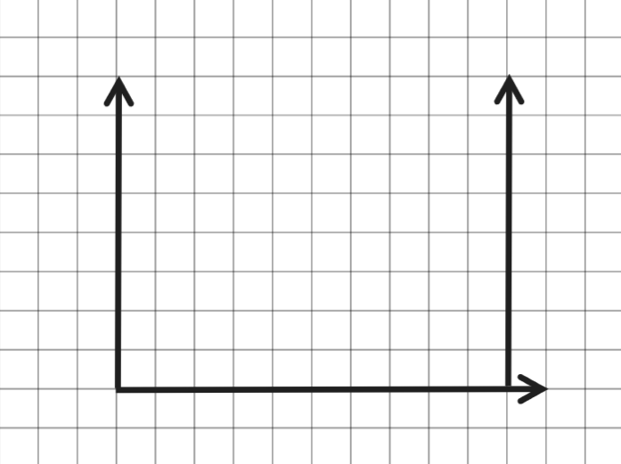
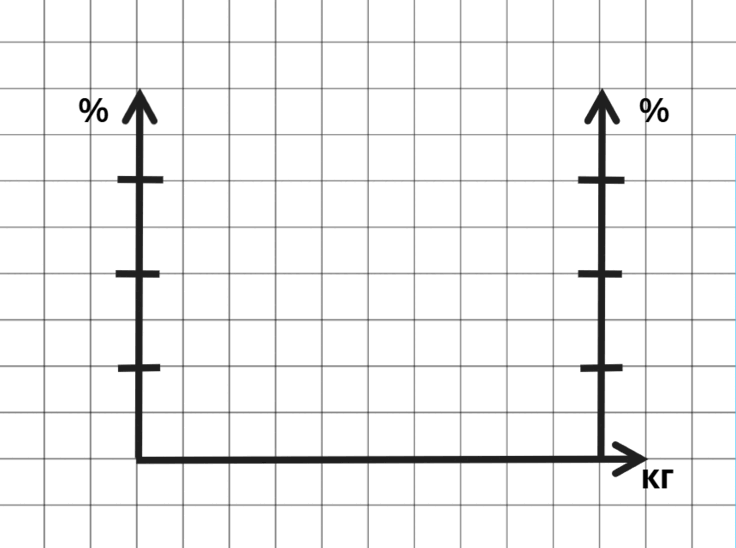
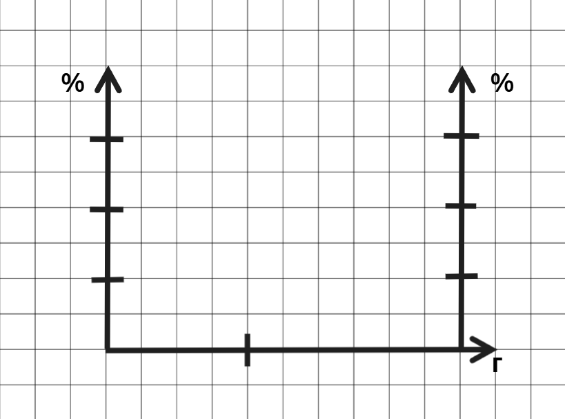
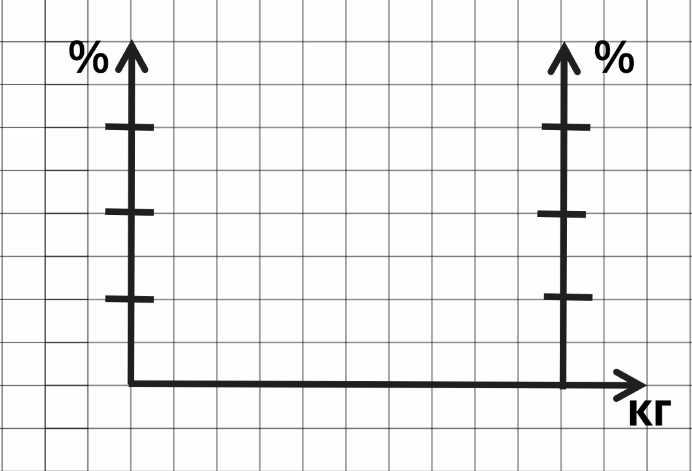
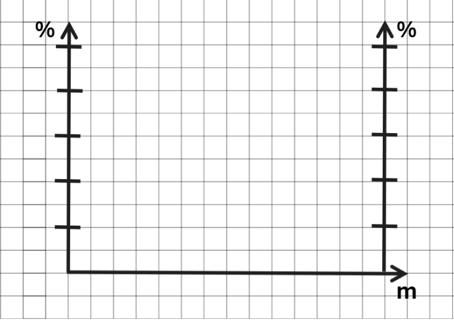

1) Чертим координатную плоскость. Вертикальная ось- процентное содержание вещества (%), горизонтальная- масса вещества.
2) Если знаем массу вещества, то откладываем это значение на координатной оси.
3) Параллельным переносом, дублируем ось процентного содержания вещества, которая исходит из точки, отложенной на оси массы вещества (пункт 2).
Имеются два сплава первый содержит 5% никеля второй 30% никеля. Из двух сплавов получили третий сплав массой 150 кг содержащий 25% никеля. Какова масса изначальных сплавов?
Строим шаблон графика. Для осей, отражающих процентное содержание никеля в сплаве, возьмем масштаб 1:5 (1 клетка соответствует 5 %). Отметим, что общая масса сплава равна 150 кг.
Нам известно, что первый сплав содержит 5% никеля, отмечаем эту точку на одной из осей, отражающих процентное содержание никеля в сплаве. На второй оси отмечаем процентное содержание никеля в другом сплаве (30%). Проводим прямую через эти две точки.
Зная, что третий сплав содержит 25% никеля, проводим перпендикуляр к осям процентного содержания никеля в сплаве, к отметкам равным 25. Отмечаем точку пересечения перпендикуляра и построенной нами ранее прямой. Строим перпендикуляр к оси массы сплава, проходящий через данную точку. По графику видим, что масса первого сплава, содержащего 5% никеля, равна 30 кг, а второго – 120 кг.
30 и 120 кг.

Смешали некоторое количество 15−процентного раствора некоторого вещества с таким же количеством 19−процентного раствора этого вещества. Сколько процентов составляет концентрация получившегося раствора?

Строим шаблон графика. Для осей, отражающих процентное содержание вещества в растворе, возьмем масштаб 1:1 (1 клетка соответствует 1 %), однако начнем разметку осей с 13% для удобства.
Нам известно, что первый раствор содержит 15% вещества, отмечаем эту точку на одной из осей, отражающих процентное содержание вещества в растворе. На второй оси отмечаем процентное содержание вещества в другом растворе (19%). Проводим прямую через эти две точки.
Так как нам сказано, что массы растворов одинаковы, значит проводим перпендикуляр к середине оси, отражающей массы сплавов. Находим точку пересечения перпендикуляра и ранее построенной нами прямой. Проводим перпендикуляр к осям, отражающим процентное содержание вещества в растворах, проходящий через найденную точку. По графику видим, что концентрация полученного раствора равна 17%.
17%.
Какой концентрации получится сироп, если к 300г 30% сиропа добавить 200г воды?
Строим шаблон графика. Для осей, отражающих процентное содержание вещества в растворе, возьмем масштаб 1:5 (1 клетка соответствует 5 %). На оси, отражающей массу сиропа, отмерим два отрезка: первый длиной 300 г, второй — 200 г.
Нам известно, что исходная масса сиропа была 300 г и содержала вещество в концентрации 30%. Поэтому на процентной оси, расположенной напротив отрезка 300 г, ставим отметку 30%. В сироп добавляется вода, процентное содержание вещества в которой равна 0%. На процентной оси, лежащей напротив отрезка равного 200г отмечаем 0%. Строим прямую через отмеченные нами точки.
Строим перпендикуляр к оси, отражающей массу сиропа, из точки разделяющей ось на отрезки 200г и 300г. Отмечаем точку пересечения перпендикуляра и построенной нами прямой. Через эту точку проводим перпендикуляр для осей, отражающих процентное содержание вещества в сиропе. Видим, что концентрация нового сиропа равна 18%.
18%.

Имеется 2 сплава, массы которых отличается на 30 кг. Первый сплав содержит 10% олова, а второй 30%. Из этих сплавов получили 3 сплав, который содержит 15% олова. Найти массу 10-процентного олова.

Строим шаблон графика. Для осей, отражающих процентное содержание вещества в растворе, возьмем масштаб 1:5 (1 клетка соответствует 5 %). Нам известно, что первый сплав содержит 10% олова, отмечаем эту точку на одной из осей, отражающих процентное содержание вещества в растворе. На второй оси отмечаем процентное содержание вещества в другом растворе (30%). Проводим прямую через эти две точки.
Проводим пунктирную линию параллельную оси массы сплава на отметке равной 15%. Проводим перпендикуляр к оси массы сплава от точки пересечения двух ранее построенных прямых.
Замечаем, что перпендикуляр разделяет оси массы на 7,5 клеток и 2,5 клеток. Разница отрезков равна 5 клеткам. По условию задачи разница масс сплавов 30 кг. Значит, одна клетка равна 6 кг.
Отсюда ищем массу 10-процентного олова. Масса этого сплава отмечена, как 7,5 клеток, значит масса сплава равна 45 кг.
45 кг.
Сколько сахара надо добавить к 300г 30% сахарного сиропа, чтобы получить 40% сироп?
Строим шаблон графика. Для осей, отражающих процентное содержание вещества в растворе, возьмем масштаб 1:10 (1 клетка соответствует 10 %).
Нам известно, что первый раствор содержит 30% вещества, отмечаем эту точку на одной из осей, отражающих процентное содержание вещества в растворе. На второй оси отмечаем процентное содержание вещества в другом растворе. Так как мы добавляем сахар, то процентное содержание вещества 100%. Проводим прямую через эти две точки.
Проводим пунктирную линию параллельную оси массы раствора на отметке равной 40%. Проводим перпендикуляр к оси массы сплава от точки пересечения двух ранее построенных прямых. Больший отрезок, отражающий массу изначального раствора, равен 12 клеткам и 300г, по условию. Значит, 1 клетка равна 25 г. Тогда меньший отрезок, отражающий массу сахара, равный 2 клеткам составляет 50 г.
50 г.

В сосуд, содержащий 7 литров 14-процентного водного раствора некоторого вещества, добавили 7 литров воды. Сколько процентов составляет концентрация получившегося раствора?
Смешали 9 литров 20-процентного водного раствора некоторого вещества с 11 литрами 40-процентного водного раствора этого же вещества. Сколько процентов составляет концентрация получившегося раствора?